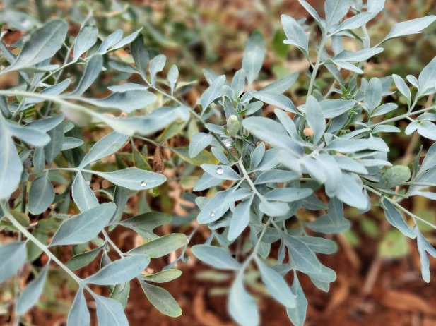

Publicações Recentes

A linha tênue entre Machismo e Vulgaridade no Âmbito Escolar
Layane Araújo 26-04-2022
Em primeiro lugar, questiono se um texto de uma garota de dezesseis anos seria capaz de mudar um contexto vivido desde a existência de sua tataravó. Na tentativa de explicar o óbvio, surge um medo...

Espírito Esportivo: Uma resenha sobre o JEMG
Sandro Filho 20-04-2022
A última edição da competição foi marcada por muita disputa nos jogos e também por imaturidade e falta de espírito esportivo. O esporte tornou-se presente no cotidiano dos alunos, há muito tempo...

Divulgando a ciência: O poder medicinal das plantas
Otávio Queiroz 13-14-2022
As plantas são extremamente utilizadas na medicina, desde os primórdios da humanidade, os povos antigos usavam plantas para fazerem chás e pomadas. Esses costumes permanecem até os dias atuais. Um exemplo...